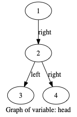
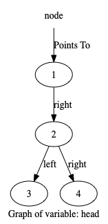
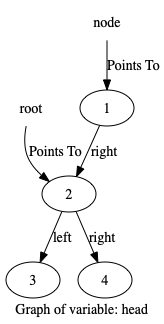
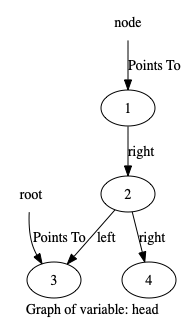
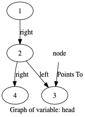
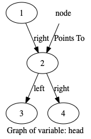
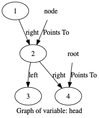
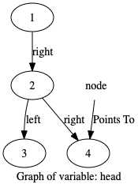

class TreeNode:
def __init__(self, val=0, left=None, right=None):
self.val = val
self.left = left
self.right = right
def __str__(self):
s = str(self.val)
if self.left:
s = str(self.left) + " "+s
if self.right:
s += " " + str(self.right)
return s
def __repr__(self):
return self.__str__()
def __eq__(self,other):
return self.__str__() == other.__str__()
def inorderTraversal(root):
head = root # watchvar btree:left:right:val head
res = [] # watchvar ref:head:btree root
stack = [] # watchvar res
node = None # watchvar ref:head:btree node
while True:
while root:
stack.append(root)
root = root.left
if not stack:
return res
node = stack.pop()
res.append(node.val)
root = node.right
def go():
# https://leetcode.com/problems/binary-tree-inorder-traversal/
a = TreeNode(1)
b = TreeNode(2)
c = TreeNode(3)
d = TreeNode(4)
a.right = b
b.left = c
b.right = d
ans= inorderTraversal(a)
Step:1,Line:34
Code executed:def go():
No Variable change detected in those marked for tracing
Step:2,Line:36
Code executed: a = TreeNode(1)
No Variable change detected in those marked for tracing
Step:3,Line:2
Code executed: def __init__(self, val=0, left=None, right=None):
No Variable change detected in those marked for tracing
Step:4,Line:3
Code executed: self.val = val
No Variable change detected in those marked for tracing
Step:5,Line:4
Code executed: self.left = left
No Variable change detected in those marked for tracing
Step:6,Line:5
Code executed: self.right = right
No Variable change detected in those marked for tracing
Step:7,Line:5
Code executed: self.right = right
No Variable change detected in those marked for tracing
Step:8,Line:37
Code executed: b = TreeNode(2)
No Variable change detected in those marked for tracing
Step:9,Line:2
Code executed: def __init__(self, val=0, left=None, right=None):
No Variable change detected in those marked for tracing
Step:10,Line:3
Code executed: self.val = val
No Variable change detected in those marked for tracing
Step:11,Line:4
Code executed: self.left = left
No Variable change detected in those marked for tracing
Step:12,Line:5
Code executed: self.right = right
No Variable change detected in those marked for tracing
Step:13,Line:5
Code executed: self.right = right
No Variable change detected in those marked for tracing
Step:14,Line:38
Code executed: c = TreeNode(3)
No Variable change detected in those marked for tracing
Step:15,Line:2
Code executed: def __init__(self, val=0, left=None, right=None):
No Variable change detected in those marked for tracing
Step:16,Line:3
Code executed: self.val = val
No Variable change detected in those marked for tracing
Step:17,Line:4
Code executed: self.left = left
No Variable change detected in those marked for tracing
Step:18,Line:5
Code executed: self.right = right
No Variable change detected in those marked for tracing
Step:19,Line:5
Code executed: self.right = right
No Variable change detected in those marked for tracing
Step:20,Line:39
Code executed: d = TreeNode(4)
No Variable change detected in those marked for tracing
Step:21,Line:2
Code executed: def __init__(self, val=0, left=None, right=None):
No Variable change detected in those marked for tracing
Step:22,Line:3
Code executed: self.val = val
No Variable change detected in those marked for tracing
Step:23,Line:4
Code executed: self.left = left
No Variable change detected in those marked for tracing
Step:24,Line:5
Code executed: self.right = right
No Variable change detected in those marked for tracing
Step:25,Line:5
Code executed: self.right = right
No Variable change detected in those marked for tracing
Step:26,Line:40
Code executed: a.right = b
No Variable change detected in those marked for tracing
Step:27,Line:41
Code executed: b.left = c
No Variable change detected in those marked for tracing
Step:28,Line:42
Code executed: b.right = d
No Variable change detected in those marked for tracing
Step:29,Line:43
Code executed: ans= inorderTraversal(a)
No Variable change detected in those marked for tracing
Step:30,Line:19
Code executed:def inorderTraversal(root):
No Variable change detected in those marked for tracing
Step:31,Line:20
Code executed: head = root # watchvar btree:left:right:val head

No Variable change detected in those marked for tracing
Step:32,Line:21
Code executed: res = [] # watchvar ref:head:btree root
No Variable change detected in those marked for tracing
Step:33,Line:22
Code executed: stack = [] # watchvar res
No Variable change detected in those marked for tracing
Step:34,Line:23
Code executed: node = None # watchvar ref:head:btree node

No Variable change detected in those marked for tracing
Step:35,Line:24
Code executed: while True:

No Variable change detected in those marked for tracing
Step:36,Line:25
Code executed: while root:

No Variable change detected in those marked for tracing
Step:37,Line:26
Code executed: stack.append(root)

No Variable change detected in those marked for tracing
Step:38,Line:27
Code executed: root = root.left

Variable root changed from 1 3 2 4 to None
Step:39,Line:25
Code executed: while root:
No Variable change detected in those marked for tracing
Step:40,Line:28
Code executed: if not stack:

No Variable change detected in those marked for tracing
Step:41,Line:30
Code executed: node = stack.pop()

Variable node changed from None to 1 3 2 4
Step:42,Line:31
Code executed: res.append(node.val)

Variable res changed from [] to [1]
Step:43,Line:32
Code executed: root = node.right

Variable root changed from None to 3 2 4
Step:44,Line:25
Code executed: while root:

No Variable change detected in those marked for tracing
Step:45,Line:26
Code executed: stack.append(root)

No Variable change detected in those marked for tracing
Step:46,Line:27
Code executed: root = root.left

Variable root changed from 3 2 4 to 3
Step:47,Line:25
Code executed: while root:

No Variable change detected in those marked for tracing
Step:48,Line:26
Code executed: stack.append(root)

No Variable change detected in those marked for tracing
Step:49,Line:27
Code executed: root = root.left
Variable root changed from 3 to None
Step:50,Line:25
Code executed: while root:

No Variable change detected in those marked for tracing
Step:51,Line:28
Code executed: if not stack:

No Variable change detected in those marked for tracing
Step:52,Line:30
Code executed: node = stack.pop()

Variable node changed from 1 3 2 4 to 3
Step:53,Line:31
Code executed: res.append(node.val)

Variable res changed from [1] to [1, 3]
Step:54,Line:32
Code executed: root = node.right

No Variable change detected in those marked for tracing
Step:55,Line:25
Code executed: while root:

No Variable change detected in those marked for tracing
Step:56,Line:28
Code executed: if not stack:

No Variable change detected in those marked for tracing
Step:57,Line:30
Code executed: node = stack.pop()

Variable node changed from 3 to 3 2 4
Step:58,Line:31
Code executed: res.append(node.val)
Variable res changed from [1, 3] to [1, 3, 2]
Step:59,Line:32
Code executed: root = node.right

Variable root changed from None to 4
Step:60,Line:25
Code executed: while root:
No Variable change detected in those marked for tracing
Step:61,Line:26
Code executed: stack.append(root)

No Variable change detected in those marked for tracing
Step:62,Line:27
Code executed: root = root.left

Variable root changed from 4 to None
Step:63,Line:25
Code executed: while root:

No Variable change detected in those marked for tracing
Step:64,Line:28
Code executed: if not stack:

No Variable change detected in those marked for tracing
Step:65,Line:30
Code executed: node = stack.pop()

Variable node changed from 3 2 4 to 4
Step:66,Line:31
Code executed: res.append(node.val)

Variable res changed from [1, 3, 2] to [1, 3, 2, 4]
Step:67,Line:32
Code executed: root = node.right

No Variable change detected in those marked for tracing
Step:68,Line:25
Code executed: while root:

No Variable change detected in those marked for tracing
Step:69,Line:28
Code executed: if not stack:

No Variable change detected in those marked for tracing
Step:70,Line:29
Code executed: return res

No Variable change detected in those marked for tracing
Step:71,Line:29
Code executed: return res
No Variable change detected in those marked for tracing